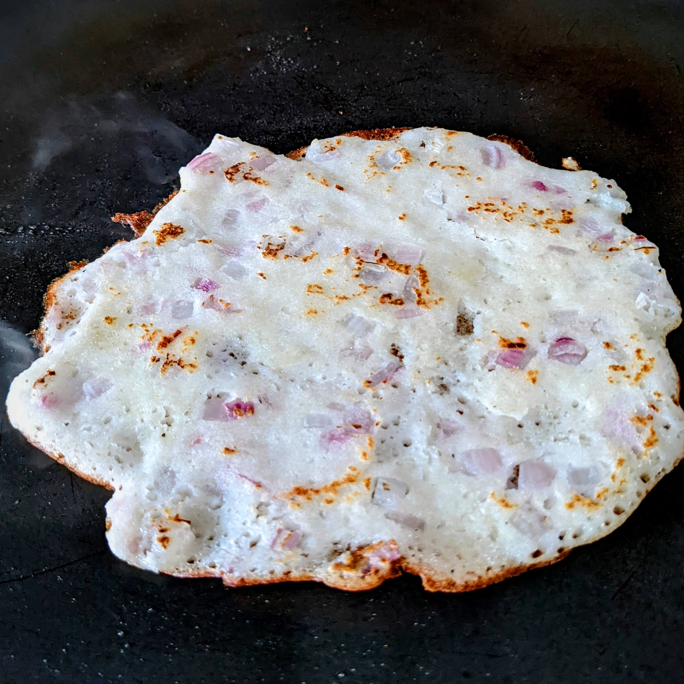
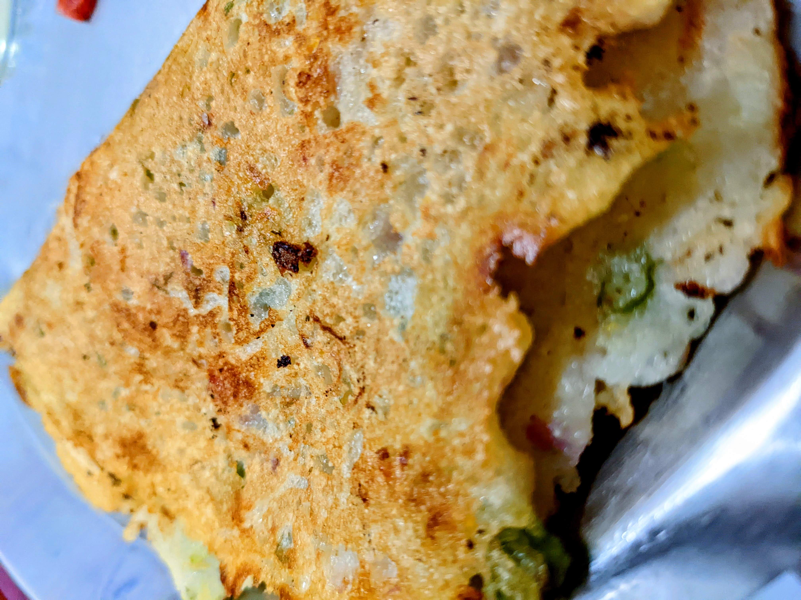

Above is my first attempt at making dosa. I made it for dinner on Feb 16, 2022 and I used the ready-to-use idli & dosa from iD fresh foods. It needed to be salted though which my sister helped with.
The dosa on the right is the one I made first. I greased the pan with ghee and then poured the batter onto it and that's when I felt that the pan was not to be greased first, my sister came to check and confirmed that it indeed shouldn’t/needn't be greased first. However it did not affect the taste.
For the second one I did not grease the pan. The colour came out really well and it cooked pretty good, although it wasn’t glistening like the ones we get at restaurants because we do not use so much ghee or
oil at home to keep it healthy.
I also prepared the sambar with just a little help from my sister, and to be honest, I liked it more than what my mom makes. The chutney and potato masala was made by my sister only.

We had some chutney, sambar, masala and batter left from the previous night so we decided to make dosa again for breakfast. This was the dosa I made which came out well, although I still need to get it perfectly circular and learn to spread it in the centre of the pan as it always spreads to the side and then I have to reposition the pan so the flame covers the dosa.

For the second dosa I did not have masala left and I don’t like plain dosa so much so I added some chopped onions to the batter itself and then poured it on the pan. It had to be made thick and to cook it properly this one was flipped and cooked a little on the side too (the upper side shown here is the mentioned “other side”. The bottom is golden brown) This tasted really good too.

I saw that my mom had added veggies like beans, onions and tomatoes and suji to the dosa batter to increase the quantity of the batter, this is usually how uttapam is made. Since there are veggies added to the batter, it is difficult to make it thin while spreading, and another difference that comes while making dosa and uttapam is that this one needs to be flipped and cooked on the other side a little bit too. Making this was fun and delicious too.